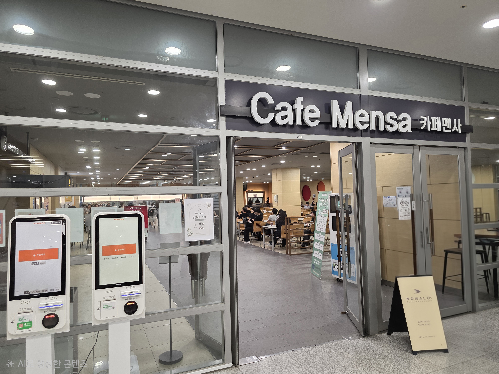
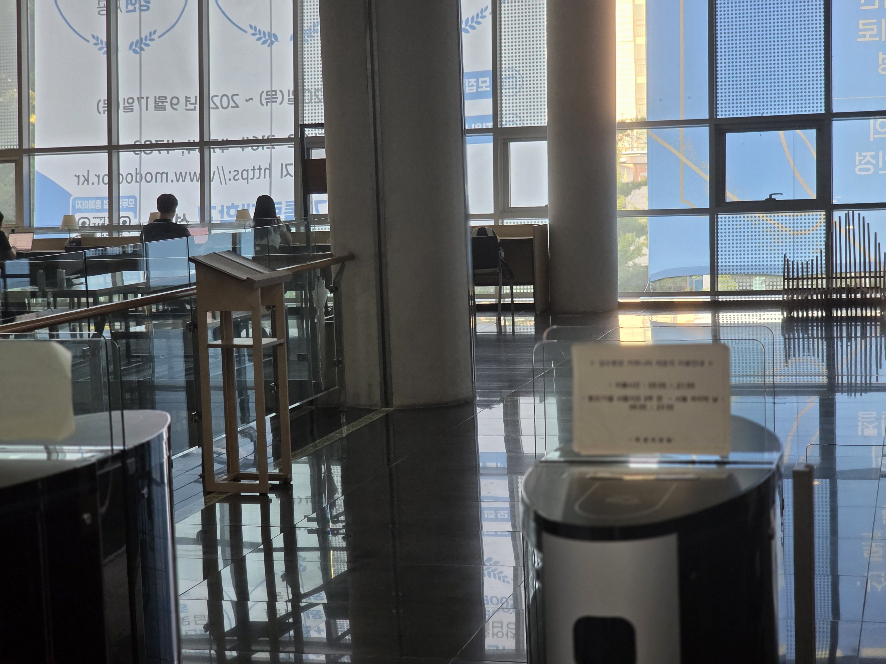
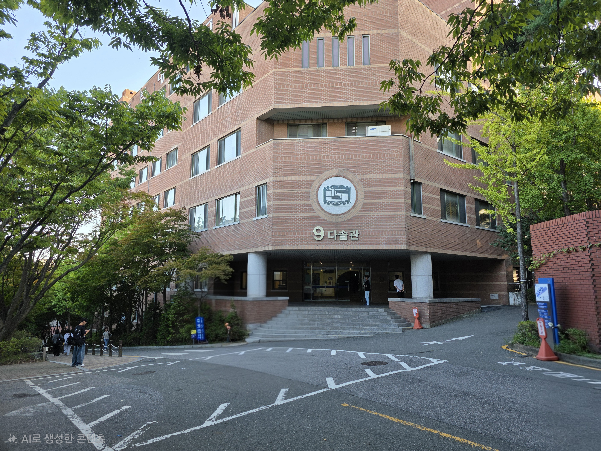

카페 멘사
CAMPUS MUSEUM / 02
편하게 먹을 수 있는 카페 멘사
음식을 맛있게 먹을 수 있는 장소

이 장소가 의미 있는 이유
바깥에서 먹을 자리가 없을 때 음식을 포장해서 여기서 음식을 즐길 수 있었습니다.
또한 공강 시간에 쉽게 찾아와서 휴식할 수 있는 장소이기도 합니다.
찾아가는 방법
김수환관 1층 정문에서 엘레베이터가 있는 로비에서 왼쪽으로 계속 가면 찾을 수 있습니다.
여기에서 해볼 것
- 맛있는 음식 포장해서 카페 멘사에서 즐기기
- 카페 멘사에서 편안한 시간 보내기
인커라
CAMPUS MUSEUM / 03
휴식과 학습의 자리 인커라
편안한 분위기에서 공부하고 휴식할 수 있는 장소

이 장소가 의미 있는 이유
2~3시간 긴 공강 시간이 있다면 앉아서 공부만 하기에는 지루할 수 있습니다.
인커라에는 누워서 휴식할 수 있는 공간이 있어 공부하다가 잠시 쉬고 싶을 때 편하게 쉴 수 있습니다.
시험기간에는 많은 학생들이 공부하러 오기 때문에 조용한 분위기에서 공부할 수 있습니다.
찾아가는 방법
김수환관 1층 정문에서 바로 오른쪽으로 가면 찾을 수 있습니다. 혹은 2층에서도 들어갈 수 있습니다.
여기에서 해볼 것
- 인커라에서 편안한 시간 보내기
- 인커라에서 공부하기
다솔관
CAMPUS MUSEUM / 04
배움의 장 다솔관
새로운 지식을 얻고 싶을 때 찾아가는 장소

이 장소가 의미 있는 이유
다솔관에는 pc와 다양한 소프트웨어가 구비되어 있어 다양한 수업을 이곳에서 진행하곤 합니다.
이곳에서 많은 학생들이 새로운 지식을 얻고, 다양한 경험을 쌓을 수 있었습니다.
찾아가는 방법
김수환관 4층에서 바깥으로 나와 바로 직진하여 계단을 오르고 중간에 오른쪽 오르막길을 따라가면 찾을 수 있습니다.
혹은 니콜스관 4층에서 복도를 따라 나오면 바로 찾을 수 있습니다.
여기에서 해볼 것
- 다솔관에서 강의 듣기
- 실습실 컴퓨터로 프로젝트 작업하기